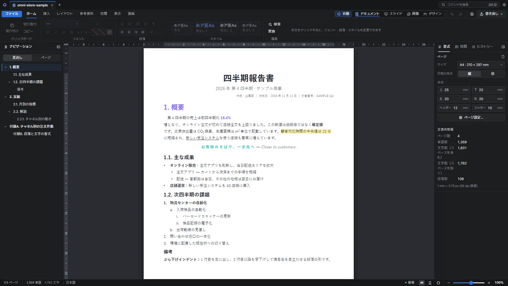
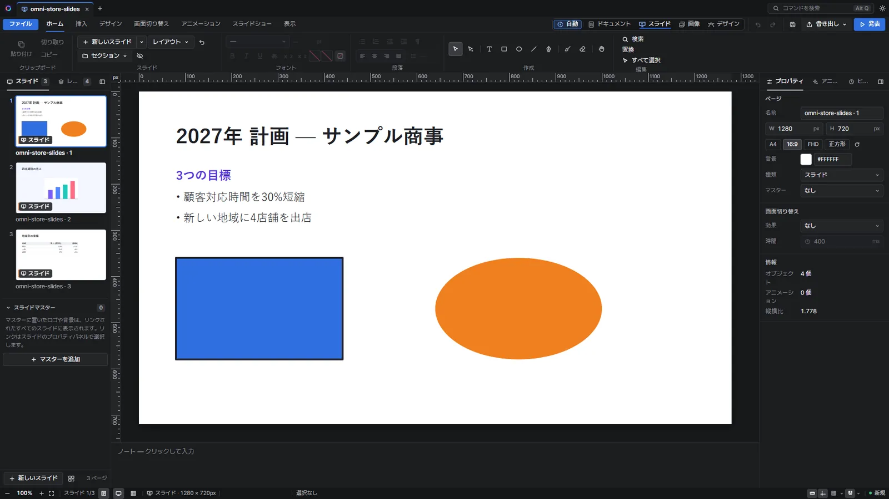
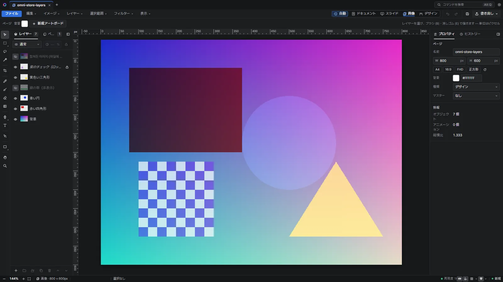
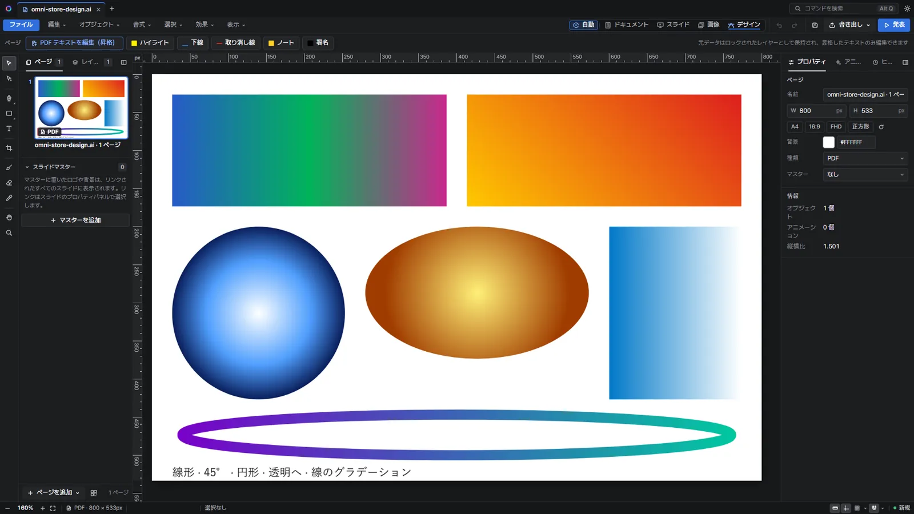
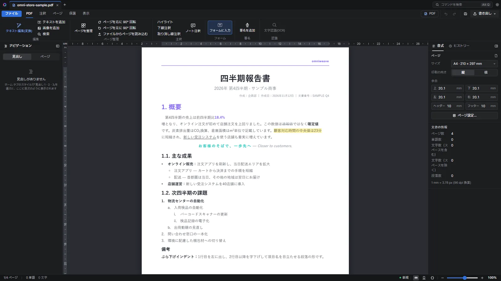
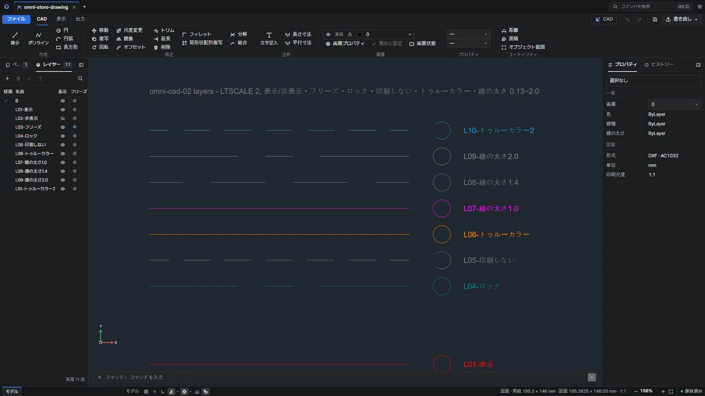

届く文書は形式バラバラ。作業は .omw ひとつで。
どんな形式もひとつのキャンバスで開いて編集。渡すときは元の形式で書き出すだけです。
- 開く受け取ったファイルをそのまま
- まとめる作業は .omw ひとつに
- 書き出す渡すときは元の形式で
目標.omw を、誰もが読み書きできる共通の作業ファイルに
画面を見る
アプリはひとつ。
モードを切り替えるだけ。
すべて実際のアプリ画面です。タブを押してみてください。

DOCX · HWPX · DOC · HWP
見出しナビとページ設定を備えた文書編集
- モード切り替え
- 見出しで移動
- 用紙サイズと余白

PPTX · PPT
マスター、切り替え効果、スライドショー
- スライド一覧
- 切り替え効果
- すぐに発表

PSD · PNG · JPG · WebP
PSD のレイヤーをそのまま開いて編集
- レイヤー
- 描画モード
- 描画ツール

AI · SVG
AI ファイルの図形とグラデーションをそのまま
- ページ
- ペンと図形ツール
- サイズのプリセット

文字を編集できるオブジェクトにして直接修正
- テキスト編集
- ページ整理
- 注釈、フォーム、署名

DWG · DXF
図面を読み込み、レイヤーと線を編集
- 図面レイヤー
- 修正コマンド
- コマンドライン
画面内のファイルはテスト用に作ったサンプルです。
.omw 形式
閉じ込めない
作業ファイル。
どこでも使われる共通ファイルになるには、誰でも開けることが前提です。だから最初から公開しています。
- 中身は zip圧縮ソフトで開いて中を確認できます。パスワード付きのファイルを除きます。
- 構造を公開どの内容がどのファイルに入るかを文書で公開しています。
- GPL オープンソース.omw を読み書きするコードは誰でも読み、改良して使えます。
目標現在 .omw を開けるのは Omniweave だけです。ほかのツールも読み書きできる共通形式になることを目指しています。
パッケージ構造を見る
document.omw ├── mimetype 形式の識別（先頭、無圧縮） ├── manifest.json メタデータとページ索引 ├── scene_graph.cbor 編集内容のすべて ├── rasters/<hash>.raw 重複を除いた 256×256 ピクセルタイル ├── assets/<hash>.<ext> 画像・PDF・フォントの原本 ├── slides/slide_deck.json スライドの順序と切り替え（読み取り用コピー） ├── vectors/paths.json ベクターパス（読み取り用コピー） ├── documents/document.xml 文書の段落（読み取り用コピー） └── documents/preview.txt 検索用プレーンテキスト
Omniweave が読むのは scene_graph.cbor と各断片だけで、コピーはほかのツールのために入れています。開くたびにすべての断片のハッシュを確かめ、壊れた断片だけを飛ばします。
数字で見る
実際に測った値だけを載せています。
測定条件と制限
- インストーラー：Omniweave_0.2.0_x64-setup.exe、17,464,150 バイト（署名前のビルド）。リリースごとに変わります。
- 実務サンプル：2026-11-22 の公開前チェック。すべて成功、一部、案内（開けない理由を表示）のいずれかでした。ファイル名と内容は公開しません。
- 原本どおりの保存：DOCX、HWPX、XLSX、PPTX、PDF はリポジトリのサンプルすべて、PSD は 259/259 で確認しました。
- インターネットは新しいバージョンの確認（GitHub Releases）にだけ使います。
- 暗号化された文書（PDF AES-256、Office Agile、.omw AES-256-GCM）は、編集後にもう一度暗号化して保存します。
- 初期リリースです。大切な文書は原本を別に保管してください。
Loom エンジン
変わったところだけ
描き直し、保存し直す。
タイルやオブジェクトごとに内容アドレスを付け、同じ断片は一度だけ保存します。
仕組みと測定条件
- Thread256px タイル、オブジェクト、アセットごとの 64 ビット内容アドレス。同じタイルはファイルに一度だけ入ります。
- Weave Cache画面タイルのキーは、その範囲に触れる断片のアドレスのハッシュ。無効化のコードがないので、消した跡が残る種類のバグは構造上起きません。
- Shuttle Journal初めて見る断片だけを IndexedDB に記録。自動保存が軽く、異常終了後も復元できます。
- 不変の履歴元に戻すは文書の参照を差し替えるだけで、ピクセルはコピーしません。
npm run bench（Vitest bench、Node）で合成 4K 文書を測った値です。タイル参照 205 件のうち固有は 42 件、生データ 51.3 MiB が .omw では 1.43 MiB になり、元に戻す＋やり直しは 0.09–0.18 ms（同じ文書のディープコピーは 24–28 ms）。保存して開き直したときの破損・欠落は 0。環境：Intel Core Ultra 5 125H、Windows 11、Node v24.13.1。描画時間は含みません。
格子をこすってみてください。触れたタイルだけを描き直します。
FAQ
よくある質問
今使っているアプリは不要になりますか？
いいえ。目指しているのは多くの形式を一か所で扱うことで、色分解や高度なフィルターのような専門機能は現時点では対象外です。
別の形式で保存すると内容が抜け落ちませんか？
引き継げない内容がある場合は、保存する前に何が抜けるかをお知らせします。
Omniweave を持っていない相手は .omw をどう開きますか？
DOCX や PDF など元の形式で書き出して渡してください。.omw は zip なので、中の画像やテキストのコピーはほかのツールでも取り出せます。
どんなファイルでも正しく開けますか？
形式ごとに対応度を「完全」「一部」「案内」で表示します。PSD の一部の効果や PPTX の一部の図形は近い形で描き、HEIC 写真のように開けないファイルは理由を表示します。うまく開けないファイルはぜひお知らせください。
オープンソース・GPL-3.0
一緒に織り上げてください。
いちばん助かるのは、うまく開けないファイルの報告です。
- ファイルを報告機密情報を消したサンプルで十分です。
- コードで参加TypeScript、React、Tauri 2。ルールは CONTRIBUTING.md にあります。
git clone https://github.com/wind2sp/omniweave.git cd omniweave npm i npm run dev # ブラウザーで実行 npm test # 単体テスト npm run bench # Loom ベンチマーク
名前の由来
なぜ「オメ」？
「オメ！」は、韓国・全羅道の人が驚いたときや感心したときに思わず口にする言葉です。Omniweave の頭文字でもあります。
「ファイルひとつで全部できるなんて、オメ！」
- 한국어
- 오메[o.me]
- English
- Oh-meh/oʊ.meɪ/
- 日本語
- オメome
- 中文
- 欧梅Ōuméi